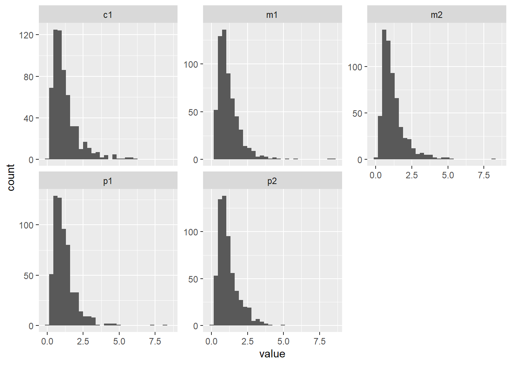
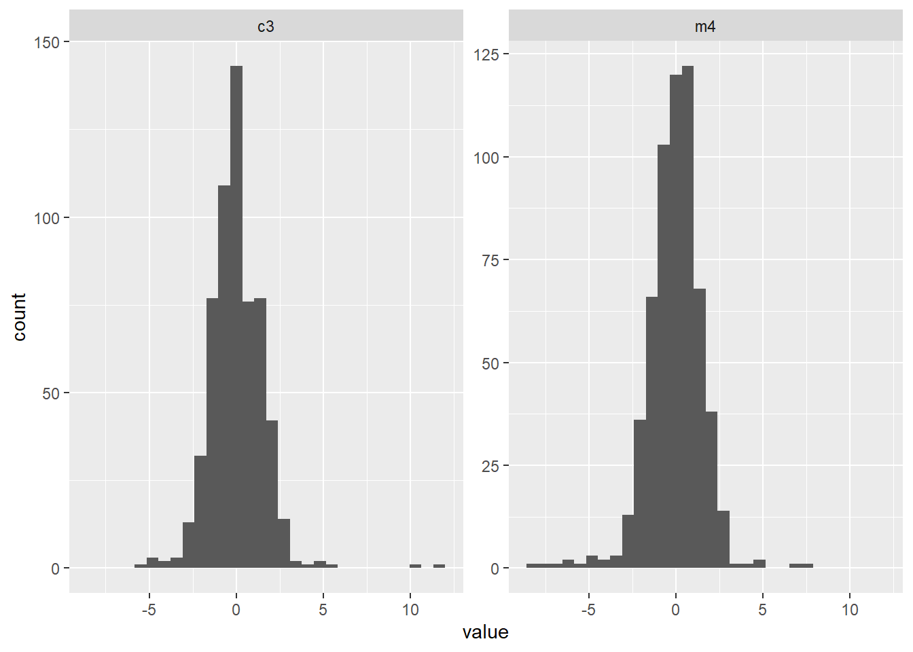

library(lavaan)
set.seed(1234)
N <- 600Lesson 6 — When SEM Goes Wrong
Robustness, Missing Data, and Reporting in SEM
Today in the workflow
Specify → Identify → Estimate → Evaluate → Revise/Report
Learning objectives
By the end of today you can:
- Distinguish MCAR / MAR / MNAR and what FIML assumes
- Explain what MLR corrects (robust SE + scaled test statistic)
- Decide when bootstrap CIs are needed
- Combine global + local diagnostics without fishing
- Write a defensible reporting paragraph
Plan for today
- Simulate a “realistic messy” dataset (skewness + MAR missingness)
- Fit the same SEM under different choices
- Compare conclusions (parameters, SE, CIs, fit, local misfit)
- Turn results into reporting decisions

Part I — Build a dataset that can fool you
Why messy data?
Real SEM work is rarely “clean”:
- indicators are skewed
- residuals are non-normal
- missingness is not random
- indirect effects are asymmetric
We simulate this so we can see what changes and what doesn’t.
Setup
Population model (measurement + structural)
A simple measurement-first SEM:
- peer pressure → social comparison
- social media → social comparison
- social comparison → eating disorder symptoms
model_pop <- "
# Measurement
peer =~ 0.80*p1 + 0.70*p2 + 0.60*p3 + 0.70*p4
media =~ 0.70*m1 + 0.80*m2 + 0.60*m3 + 0.70*m4
comp =~ 0.70*c1 + 0.70*c2 + 0.60*c3
eat =~ 0.70*e1 + 0.60*e2
# Structural
comp ~ 0.40*peer + 0.50*media
eat ~ 0.35*comp
"
dat <- simulateData(model_pop, sample.nobs = N)Make indicators skewed
We “Likert-ify” some indicators by applying a monotone transform (skewness).
skew_vars <- c("p1","p2","m1","m2","c1")
for (v in skew_vars) dat[[v]] <- exp(dat[[v]] / 2)
Add heavy tails (non-normal residual behavior)
We inject a small number of outliers in two indicators (a common real-life pattern).
set.seed(1234)
ix <- sample(seq_len(N), size = round(0.05*N)) # ~5% outliers
dat$m4[ix] <- dat$m4[ix] + rnorm(length(ix), mean = 0, sd = 4)
dat$c3[ix] <- dat$c3[ix] + rnorm(length(ix), mean = 0, sd = 4)
Create MAR missingness (~20%)
Missingness depends on an observed variable (MAR), not on the missing value itself.
We make e1 and m3 more likely to be missing when peer pressure is high.
set.seed(1234)
# a proxy observed score for peer (in real life: a sum score, previous wave, etc.)
peer_obs <- rowMeans(dat[, c("p1","p2","p3","p4")])
p_miss <- plogis(scale(peer_obs)) # 0..1
miss <- runif(N) < (p_miss * 0.45) # tune to ~20%
dat$e1[miss] <- NA
dat$m3[miss] <- NA
round(colMeans(is.na(dat)), 3) p1 p2 p3 p4 m1 m2 m3 m4 c1 c2 c3 e1 e2
0.0 0.0 0.0 0.0 0.0 0.0 0.2 0.0 0.0 0.0 0.0 0.2 0.0 Missingness: what would you check?
- % missing per variable
- patterns (is it concentrated in a subset?)
- association between missingness and observed variables (supports MAR plausibility)
| Mechanism | Full Name | Definition | Key Idea |
|---|---|---|---|
| MCAR | Missing Completely at Random | Missingness is independent of both observed and unobserved data | No systematic pattern in missing data |
| MAR | Missing at Random | Missingness depends only on observed data, not on the missing values | Can be explained by variables you have |
| MNAR | Missing Not at Random | Missingness depends on the unobserved (missing) values themselves | Missingness is related to what is missing |
Part II — One SEM, multiple reasonable choices
The analysis model (same model throughout)
model_sem <- "
# Measurement
peer =~ p1 + p2 + p3 + p4
media =~ m1 + m2 + m3 + m4
comp =~ c1 + c2 + c3
eat =~ e1 + e2
# Structural
comp ~ peer + media
eat ~ comp
"A helper: extract the same key parameters each time
We track the same hypotheses in every fit:
- peer → comp
- media → comp
- comp → eat
key_paths <- function(fit) {
pe <- parameterEstimates(fit)
pe <- pe[pe$op == "~" & pe$lhs %in% c("comp","eat"), ]
pe[pe$rhs %in% c("peer","media","comp"),
c("lhs","op","rhs","est","se","z","pvalue")]
}Part III — Missing data: listwise vs FIML
Concepts
- MCAR: missingness unrelated to observed/unobserved → listwise unbiased (but inefficient)
- MAR: missingness depends on observed variables → FIML OK (under correct model)
- MNAR: missingness depends on unobserved/missing values → both listwise & FIML can be biased
Key point:
FIML is not “imputation”. It’s likelihood-based estimation using all available cases assuming MAR.
Fit 1 — ML, default missing handling (listwise)
fit_list <- sem(model_sem, data = dat) # default: listwise deletion
fitMeasures(fit_list, c("nobs","chisq","df","cfi","tli","rmsea","srmr")) chisq df cfi tli rmsea srmr
58.102 61.000 1.000 1.006 0.000 0.030 Fit 2 — ML + FIML
fit_fiml <- sem(model_sem, data = dat, missing = "fiml")
fitMeasures(fit_fiml, c("nobs","chisq","df","cfi","tli","rmsea","srmr")) chisq df cfi tli rmsea srmr
57.675 61.000 1.000 1.006 0.000 0.027 Sensitivity check: did the conclusion change?
rbind(
listwise = key_paths(fit_list),
fiml = key_paths(fit_fiml)
) lhs op rhs est se z pvalue
listwise.14 comp ~ peer 0.387 0.103 3.767 0
listwise.15 comp ~ media 0.381 0.087 4.392 0
listwise.16 eat ~ comp 0.444 0.126 3.521 0
fiml.14 comp ~ peer 0.434 0.091 4.788 0
fiml.15 comp ~ media 0.404 0.081 4.959 0
fiml.16 eat ~ comp 0.444 0.126 3.526 0
Interpretation rule of thumb
If your substantive conclusion changes under a reasonable alternative (e.g., listwise → FIML), treat the result as fragile and investigate why.
Part IV — Robust estimation: ML vs MLR
What MLR does (the technical version)
MLR (robust ML) typically:
- keeps similar point estimates
- adjusts standard errors using a “sandwich” (empirical) correction
- reports a scaled test statistic (robust χ²) and robust fit indices
Use case:
- non-normality (skewness, heavy tails)
- mild misspecification
- “psychology-shaped” data
Fit 3 — MLR + FIML
fit_mlr <- sem(model_sem, data = dat,
missing = "fiml",
estimator = "MLR")
fitMeasures(fit_mlr, c("nobs","chisq","df","cfi","tli","rmsea","srmr")) chisq df cfi tli rmsea srmr
57.675 61.000 1.000 1.006 0.000 0.027 Or better use robust indices
fitMeasures(
fit_mlr,
c("cfi.scaled", "tli.scaled", "rmsea.scaled",
"cfi.robust", "tli.robust", "rmsea.robust")
) cfi.scaled tli.scaled rmsea.scaled cfi.robust tli.robust rmsea.robust
1.000 1.010 0.000 1.000 1.011 0.000 fitMeasures(fit_mlr, c("cfi.robust", "tli.robust", "rmsea.robust", "srmr")) cfi.robust tli.robust rmsea.robust srmr
1.000 1.011 0.000 0.027 Sensitivity check: do SE / p-values change?
rbind(
fiml_ML = key_paths(fit_fiml),
fiml_MLR = key_paths(fit_mlr)
) lhs op rhs est se z pvalue
fiml_ML.14 comp ~ peer 0.434 0.091 4.788 0.000
fiml_ML.15 comp ~ media 0.404 0.081 4.959 0.000
fiml_ML.16 eat ~ comp 0.444 0.126 3.526 0.000
fiml_MLR.14 comp ~ peer 0.434 0.094 4.643 0.000
fiml_MLR.15 comp ~ media 0.404 0.139 2.914 0.004
fiml_MLR.16 eat ~ comp 0.444 0.132 3.357 0.001
Pitfall
Don’t mix-and-match reporting: - If you estimate MLR, report robust fit statistics (scaled χ², robust RMSEA/CFI/TLI). - Don’t copy/paste the ML χ² from another run.
Part V — Bootstrap CIs (only when it matters)
Why bootstrap is special for indirect effects
Indirect effects are products of coefficients:
\(ab = a \times b\)
Even if \((a)\) and \((b)\) are roughly normal, \((ab)\) is often skewed → normal-theory CIs can be misleading.
(Optional) Add an indirect effect to the model
model_sem_ind <- "
# Measurement
peer =~ p1 + p2 + p3 + p4
media =~ m1 + m2 + m3 + m4
comp =~ c1 + c2 + c3
eat =~ e1 + e2
# Structural
comp ~ peer + media
eat ~ comp
# Indirect effect
ind_peer := (comp~peer)*(eat~comp)
"Fit 4 — Bootstrap SE/CI (keep small for live teaching)
For live demos keep bootstrap modest (e.g., 300–800).
For papers, use ~2000+.
fit_boot <- sem(model_sem, data = dat,
missing = "fiml",
se = "bootstrap",
bootstrap = 500)Compare CI for key paths (normal vs bootstrap)
pe_norm <- parameterEstimates(fit_fiml, ci = TRUE)
pe_boot <- parameterEstimates(fit_boot, ci = TRUE, boot.ci.type = "perc")
sel <- function(pe) {
pe[pe$op == "~" & pe$lhs %in% c("comp","eat") &
pe$rhs %in% c("peer","media","comp"),
c("lhs","op","rhs","est","ci.lower","ci.upper")]
}
list(normal_CI = sel(pe_norm),
boot_CI = sel(pe_boot))$normal_CI
lhs op rhs est ci.lower ci.upper
14 comp ~ peer 0.434 0.256 0.612
15 comp ~ media 0.404 0.244 0.564
16 eat ~ comp 0.444 0.197 0.691
$boot_CI
lhs op rhs est ci.lower ci.upper
14 comp ~ peer 0.434 0.259 0.633
15 comp ~ media 0.404 0.210 0.743
16 eat ~ comp 0.444 0.199 0.729
Decision heuristic
Bootstrap is most valuable when:
- your target parameter is a product (indirect effects),
- distributions are skewed / small N,
Part VI — Fit indices: the dangerous comfort
Global fit (quick recap)
Global fit indices summarize average discrepancy:
- χ² (sample-size sensitive)
- CFI/TLI (incremental)
- RMSEA (+ CI; small df behavior)
- SRMR (residual-based)
But:
Good global fit does not guarantee good measurement or correct structure.
Local fit: residuals and MI
# Residual correlations (a small block)
round(resid(fit_mlr, type = "cor")$cov[1:6, 1:6],3) p1 p2 p3 p4 m1 m2
p1 0.000 0.023 -0.030 -0.011 -0.052 0.022
p2 0.023 0.000 0.008 -0.010 0.008 0.046
p3 -0.030 0.008 0.000 0.021 -0.006 0.016
p4 -0.011 -0.010 0.021 0.000 0.036 -0.017
m1 -0.052 0.008 -0.006 0.036 0.000 0.006
m2 0.022 0.046 0.016 -0.017 0.006 0.000modificationIndices(fit_mlr, sort. = TRUE)[1:10, c("lhs","op","rhs","mi","epc")] lhs op rhs mi epc
132 p4 ~~ e2 4.784 0.118
56 peer =~ c1 3.903 -0.244
142 m2 ~~ m4 3.872 -0.127
84 eat =~ m1 3.653 0.122
109 p2 ~~ c1 3.631 -0.043
134 m1 ~~ m3 3.494 -0.094
147 m2 ~~ e2 3.436 -0.069
94 p1 ~~ m1 3.122 -0.043
125 p4 ~~ m2 2.829 -0.060
96 p1 ~~ m3 2.437 -0.057A disciplined respecification rule
Only consider modifications that are:
- theoretically defensible
- consistent with measurement-first logic
- reported transparently (what was changed and why)
Pitfall: “MI shopping”
If you add correlated errors because they “fix RMSEA”, you can end up fitting noise.
Part VII — Reporting like a researcher
What you must report (minimum)
- Model specification (measurement + structural)
- Estimator (ML / MLR / DWLS / ULS / …)
- Missing data handling (listwise / FIML / …) + assumption (MAR)
- χ²(df), p (robust/scaled if applicable)
- CFI, TLI, RMSEA (+ CI), SRMR
- Any respecifications (with theory rationale)
- If bootstrap: type + number of draws + CI type
Example reporting paragraph (template)
The SEM was estimated in
lavaanusing robust maximum likelihood (MLR) with FIML for missing data under a MAR assumption. Model fit was evaluated using the scaled χ² test and robust fit indices (CFI, TLI, RMSEA with 90% CI, SRMR). Key parameters were interpreted based on standardized estimates and robust standard errors. Where relevant, confidence intervals were obtained via bootstrap percentile CIs (B = 500 for teaching; ≥ 2000 for publication).
Take-home: the sensitivity mindset
For any important claim, ask:
- Does it survive FIML vs listwise?
- Does it survive ML vs MLR?
- Does it survive bootstrap vs normal CI (when relevant)?
- Does it survive local diagnostics (residuals/MI)?
If not, don’t panic—learn what the data are telling you.
Exercises → Lab 6
In the lab you will:
- Increase missingness to ~40% and re-run the sensitivity checks
- Simulate MNAR and compare to MAR
- Identify 1–2 large MIs, justify (or reject) a modification
- Write a short “Methods + Results” reporting paragraph
- Lab 06 — missing data (FIML/MI) + robustness
Open lab
3 things to remember
- Missing data handling can change conclusions — check sensitivity
- Robust SE protect against inflated significance — don’t trust ML by default
- Fit indices are diagnostics, not verdicts — always check local fit